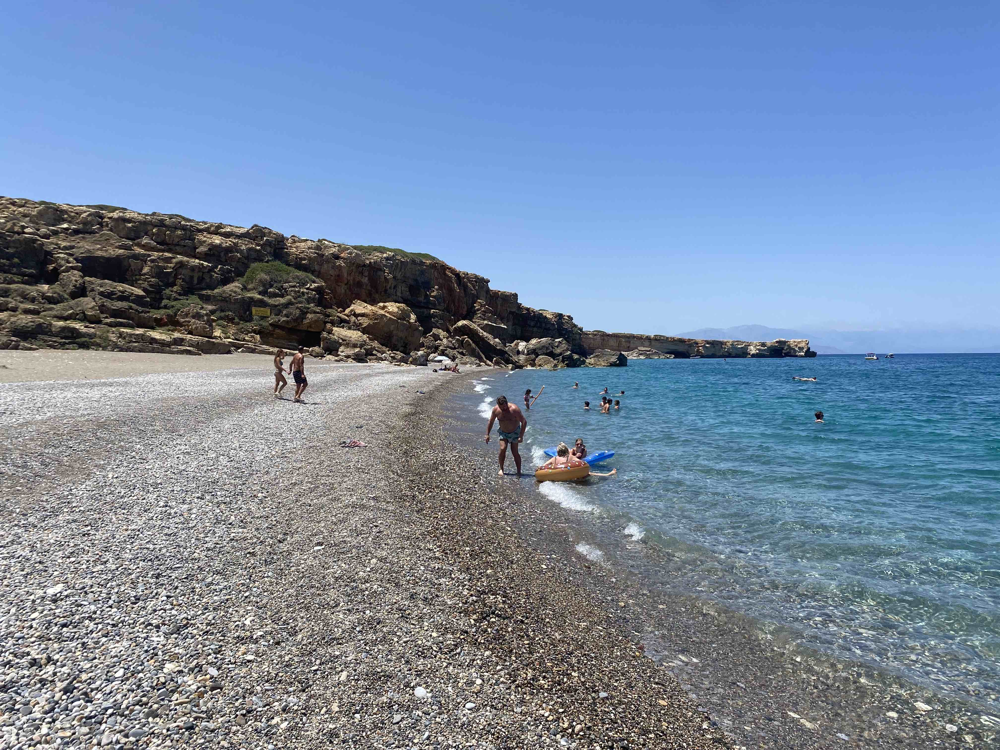
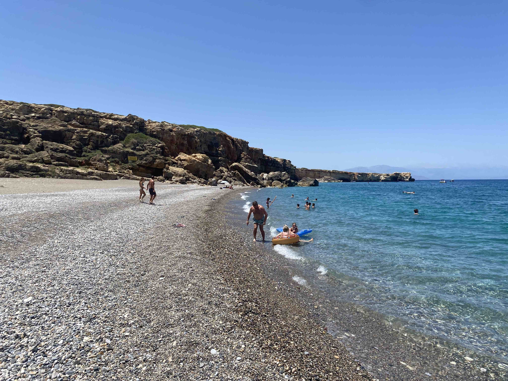
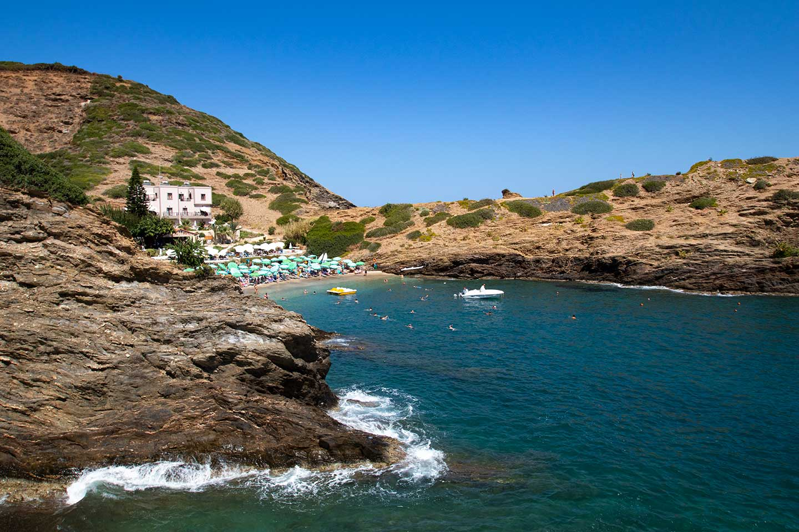
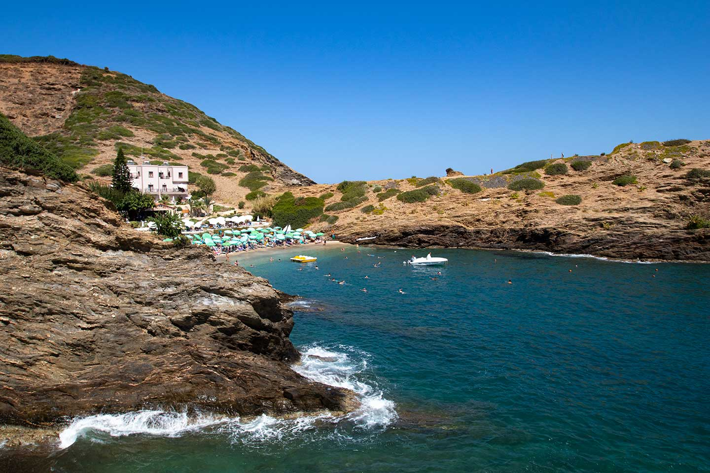

In a remote Greek village, surrounded by ancient olive groves and echoing with mythological
whispers, Black Sky Society's Skylab01 is creating a sanctuary for those who dare to
imagine expansive futures. For 90 days (March 16 - June 13, 2025), we invite four
extraordinary individuals to join us in bridging the material and metaphysical, the
technological and spiritual, the ancient and the yet-to-come.
This is not just a residency –
it's an alchemical experiment. Here, among mountains that have witnessed millennia of human
dreams, we'll explore the evolution of consciousness, fringe science, warp physics, and the
emerging post-web. We seek those who believe in creating a world of wonder, resilience,
peace, and liberation – visionaries who understand that true innovation must be rooted in
spiritual wisdom.
Nestled in the Cretan landscape, our compound exists in superposition of
past, present, and future. Mornings can be spent developing new knowledge protocols,
evenings stargazing from our rooftop, and weekends exploring ancient Greek and Minoan sites.
Our space offers both solitude for deep work and community for cosmic exploration.
If you
feel called to merge spirituality with science, to bridge technology with ancient wisdom,
and to weave personal transformation into collective liberation – we invite you to join our
experiment.
SKYLAB01 CURIOSITIES
- Are you knowledgeable about comparative theology and are on a path of transforming the masses understanding of god, so we can shrink the time toward peace?
- Are you knowledgeable or curious about the unsolved mysteries of the world?
- Are you interested in the intersection between quantum mechanics and consciousness theory, such as the work of Roger Penrose and Stuart Hameroff, on orchestrated objective reduction?
- Are you an irrational mechanic and a member of the Turing Church?
- Are you a devotee of warp physics and designing or reverse engineering interstellar vehicles? Do Jack Sarfatti's physics speak to you?
- Are you dreaming of a better internet, of a post-web?
- Are you interested in the fusion of metallurgy, and feel drawn to making or designing scepters and coins?
- Are you curious about the stars, galaxies, and our place in this universe?
- Are you actively working on expanding your astral travel, psychic or remote viewing abilities?
- Do ancient sites such as the pyramids and stonehenge light up your soul?
- Are you an expert in meteorites, geology, and finding rocks?
- Are you interested in making soap with olive oil?
- Are you interested in permaculture farming?
SPRING RESIDENCY
Are you drawn to exploring consciousness evolution, fringe science, post-web development, or cosmic discovery? Do at least three of our Curiosities deeply resonate with your journey? We invite you to apply for our inaugural Spring cohort at Skylab01 in Crete from March 16 - June 13, 2025 (90 days).
PROGRAM
Choose between the Independent track, where you focus fully on your own research project, sharing knowledge updates in a monthly salon, or the Collaborative track where you dedicate 30% time to a group project agreed upon with other residents.
ACCOMMODATION
Private bedroom in a 6-bedroom compound in Crete, Greece. Bathroom shared with 1-2 others. Residents are expected to participate in cooking communal vegan meals.
COSTS
A monthly contribution of $300-$1000 sliding scale (based on economic situation) is expected, which covers utilities, rent, food, and operational costs. Residents cover their own travel & excursion expenses.
ARRIVAL
You are expected to arrive on March 16th, 2025 (or up to 3 days before) in Heraklion, Crete, Greece. You will be picked up and taken to the property.
LOCATION
A remote mountain village in Crete, Greece (~70 minutes from Heraklion). Exact location details will be shared with approved residents. Expect a monastic-like atmosphere where deep work and inner exploration converge in a peaceful mountain setting.
APPLY
Last call is February 21st 2025, but apply earlier if you can, as applicants will be accepted on a rolling basis. If your application is a fit, a video call will be scheduled within 14 days of submission. APPLY NOW
VIBE & SETTING
DAY TO DAY
- Weekly excursions, such as hiking, exploring beaches or trips to nearby attractions
- Morning tea time where all residents enjoy tea while sharing updates on their life or projects
- Weekly salons where residents can debate or go deep on intriguing topics of interest
- Shared topic sessions for those that want to present what they're working on, or any subject they're interested in
- Occasional virtual or in-person seminars by BSS mentors & members on relevant topics
- Monthly experiments, such as remote viewing, summoning UAPs, or breath work
- Shared vegan meals (food cost is included)
- Optional shared project(s) to be determined at the start of the cohort and worked on by everyone. Could be scientific or creative in nature (brain wave science leveraging EEGs, music videos, concept album, engineering a ritual, software tools, etc.)
EXCURSIONS


 

 



LOCATION
Skylab01 has a six bedroom compound in a remote mountain village on the island of Crete in Greece.
The compound has 4 levels:- Garden level (0): Very large yard which can be used for gardening or art projects
- Residence (1): independent 3 bedroom, 2 bathroom unit
- Residence (2): independent 3 bedroom, 2 bathroom unit
- Rooftop (3): An expansive rooftop with a 360 degree view
The village is very remote: it has no restaurants or grocery stores in walking distance, so residents should be comfortable spending the majority of the time at the residence, sharing cooking and grocery run duties.
Ideal residents are seeking a monastic-like, quiet and peaceful atmosphere where people keep to themselves and are not very talkative during agreed upon hours, yet share conversation during meals or group activities.
A car is available for occasional trips to ancient Minoan and Greek sites, Eastern Orthodox monasteries, beaches, hikes, and meals outside the house. The frequency of excursions to locations further out (1-3 hours away) can be decided upon by residents.
There are some additional photos below of the surroundings. More precise location details and photos will be shared after becoming approved as a resident, following the interview phase.
MENTORS

Giulio Prisco
We are honored to welcome renowned futurist Giulio Prisco as a mentor for our Spring cohort. His recent book Irrational Mechanics: Narrative Sketch of a Futurist Science & a New Religion explores the convergence of quantum physics, consciousness theory, and mystical traditions. During the residency, Prisco will lead a seminar on irrational mechanics and will also offer one-on-one (virtual) mentorship to residents interested in these topics.